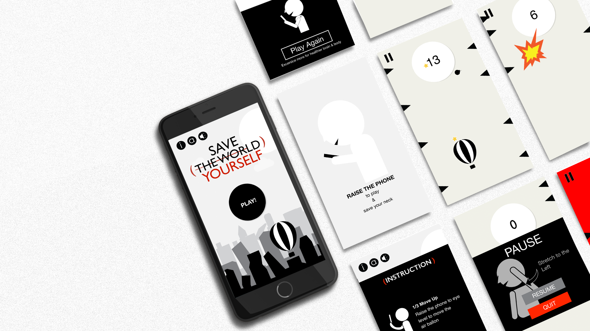

UP
"A project for mobile phone users to remind themselves
to have proper posture when they are using their phones in order to avoid chronic health problems."
to have proper posture when they are using their phones in order to avoid chronic health problems."

Demo

Raise the phone to the eye level
to Play
to Play
Why are we always looking down?
Watching people walking in the street, people tend to look down. And some reasons maybe because of they are introverts who are only shy. But most of what we see are those people who use smartphone. Today, our phone become as an extension of our body. Life becomes so convenient with the help of mobile phone. Despite the concerns and issues that mobile phone brings, we should admit that we are having a hard time to separate yourself with your mobile phone. In my opinion, using the smartphone is not a harmful thing, even though we are complaining that mobile phone are destroying the human and human interaction, but the real problem is because of the smartphone addiction/overuse.
How to Let people “Look UP”?
As what in the movie Interstellar said: “We used to look up at the sky and wonder at our place in the stars, now we just look down and worry about our place in the dirt.”
When will people willing lookup?
Game.
Tool: Xcode Swift Spritekit
Watching people walking in the street, people tend to look down. And some reasons maybe because of they are introverts who are only shy. But most of what we see are those people who use smartphone. Today, our phone become as an extension of our body. Life becomes so convenient with the help of mobile phone. Despite the concerns and issues that mobile phone brings, we should admit that we are having a hard time to separate yourself with your mobile phone. In my opinion, using the smartphone is not a harmful thing, even though we are complaining that mobile phone are destroying the human and human interaction, but the real problem is because of the smartphone addiction/overuse.
How to Let people “Look UP”?
As what in the movie Interstellar said: “We used to look up at the sky and wonder at our place in the stars, now we just look down and worry about our place in the dirt.”
When will people willing lookup?
Game.
Tool: Xcode Swift Spritekit
User Test